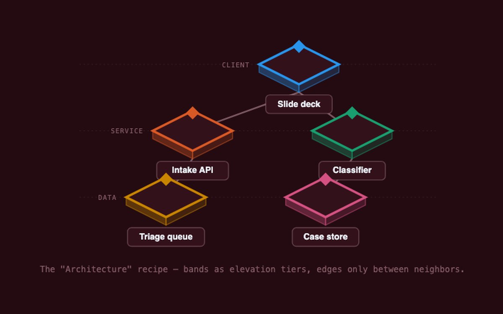
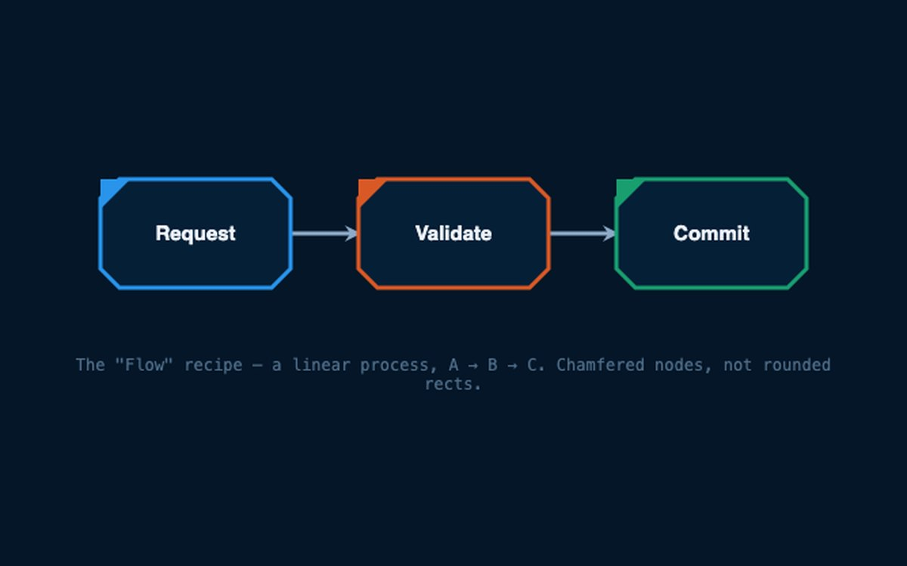
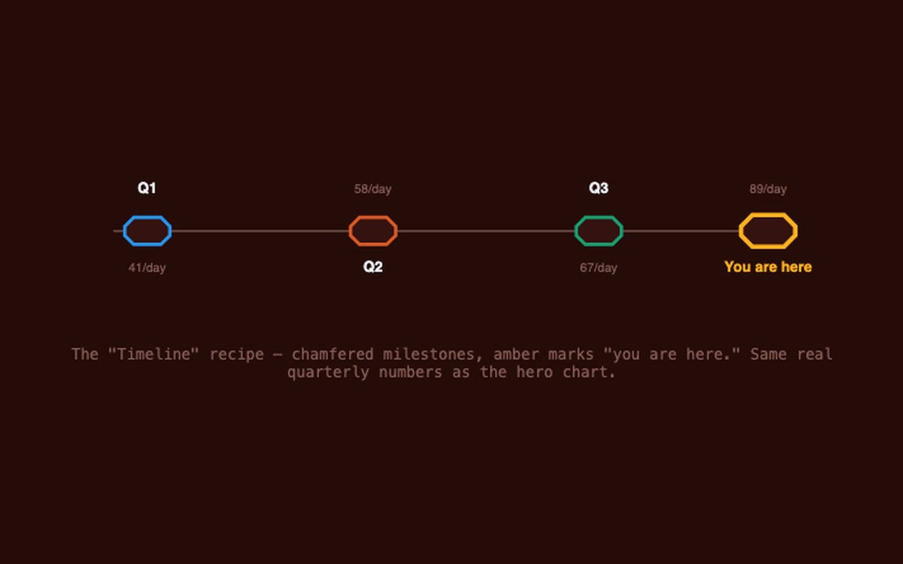
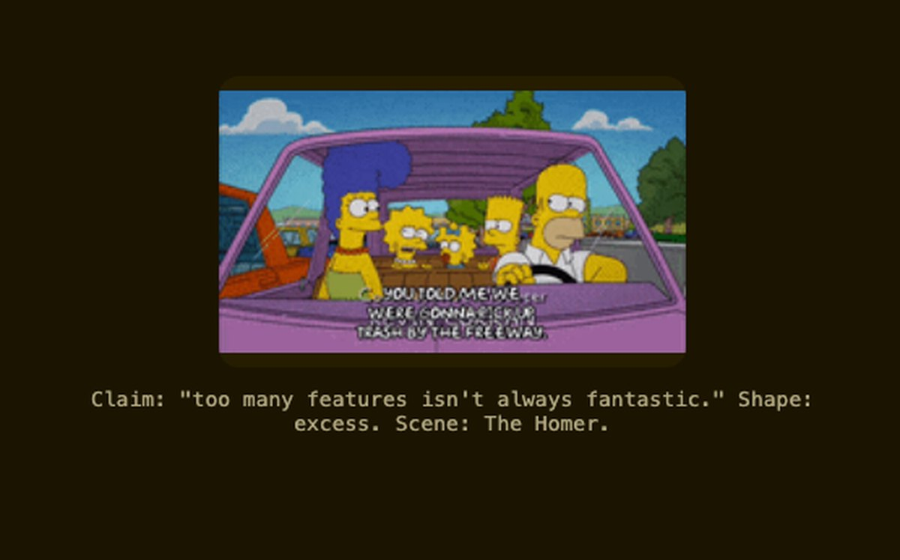
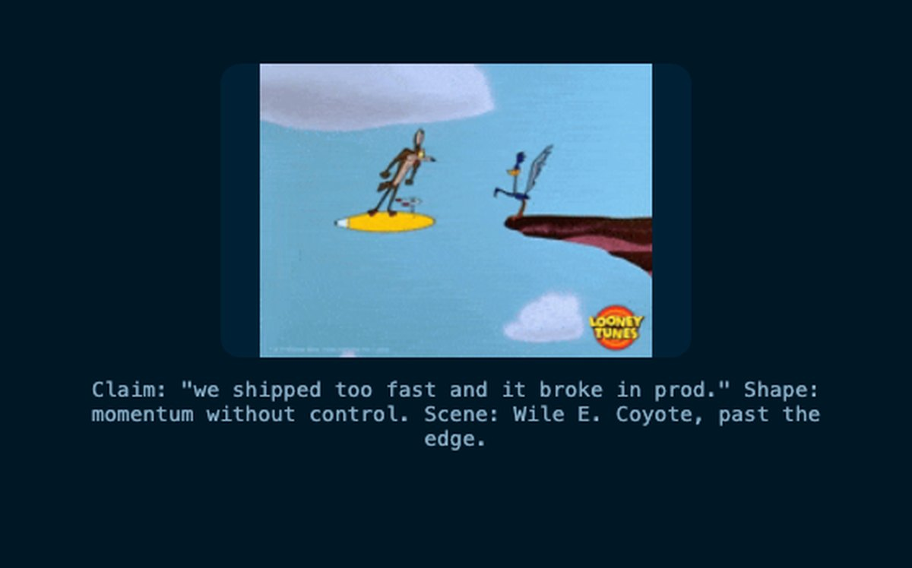
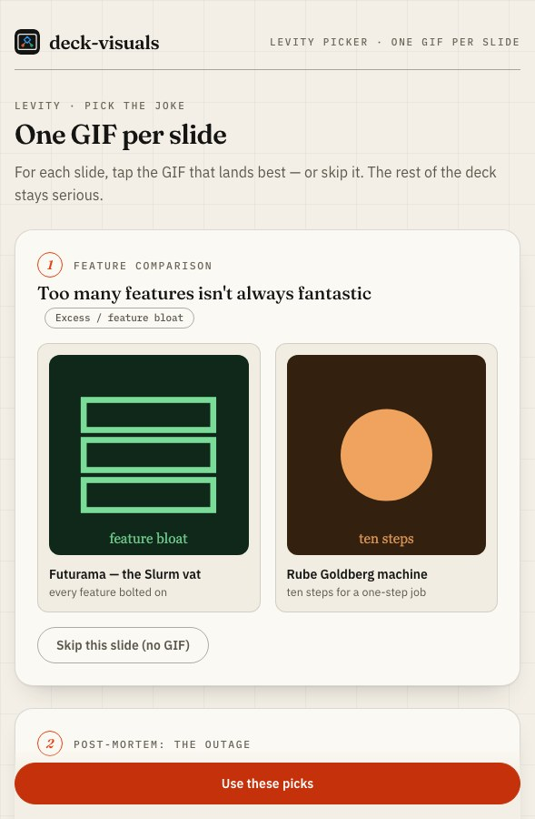
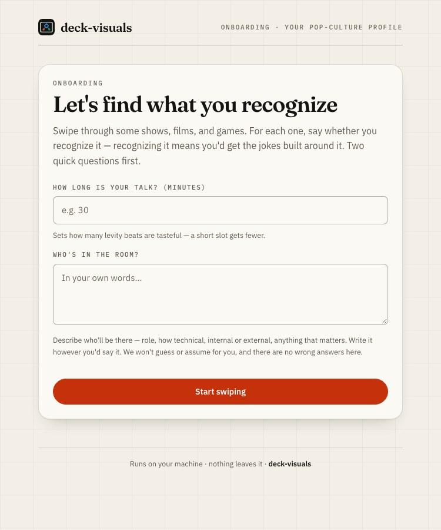
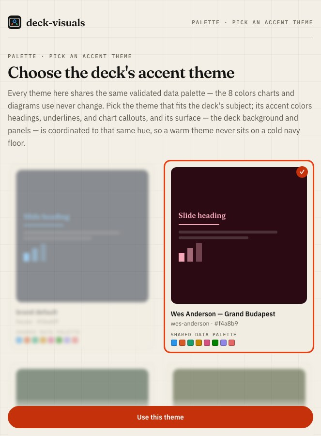

Claude Code plugin
Your deck already reads. Make it land.
Decides where a visual belongs in an HTML deck and which kind. Never renders the deck.
Inline-SVG concept diagrams, dataviz-backed charts, icon anchors, and GIF levity — each a self-contained fragment injected into a deck frontend-slides already built.
# Install /plugin marketplace add gagoar/gago-plugins /plugin install deck-visuals@gago-plugins /reload-plugins
What it generates
Impactful visuals.
Inline-SVG concept diagrams for relationships and flows. Icon anchors for single ideas.
5 diagram recipes · 16 presentation icons
See the diagrams

What it generates
Data-viz principles.
Chart form and color come from a validated brand palette; the surface is hue-matched to the theme, not a fixed navy. Every chart ships a table twin.
8 validated palette slots
See the charts
The joke is optional. The accuracy isn't.
Never a guessed GIF.
Real GIFs by direct media URL, at a deliberate cadence, verified before they ship.
Levity starts from the slide's claim, not "which GIF." Strip the claim to the shape underneath it — excess, momentum without control, fragility, over-engineering, recurrence, and more — then match one named scene that embodies it, prioritized against what the presenter's own swipe profile says they'd actually recognize.
See the levity picker


How it works
The pipeline.
Six steps. The ones tagged deck-visuals are the plugin's own; the rest hand off to the skills that already do them well.
Read the pipeline- Onboard (out-of-band). A local swipe picker rebuilds the presenter's pop-culture profile. deck-visuals
- Copy. Draft slide text. Run
icebergon the prose only. iceberg - Render. Build or open the deck. frontend-slides
- Chart injection.
datavizform/marks + brand palette color, inline-SVG + table twin. deck-visuals - Concept-visual injection. Diagram, icon, or a deferred placeholder — by the decision rule. deck-visuals
- Levity injection. GIF fragments at a tasteful cadence. deck-visuals
Validated, not eyeballed
The rigor is real.
- The palette validator (
dv-tools) is a real Go binary doing the colorblind-safety math — not eyeballed. - Every chart ships with a reachable table-view twin.
- Every GIF is verified by a direct-URL check before it ships — never a guessed link.
- The local pickers are zero-runtime binaries: bind
127.0.0.1only, no auth, no outbound calls. Nothing leaves the machine.
Palette and charts
Levity
- Every GIF is resolved to a direct media URL by search, then run through
dv-tools check-media-url— a dead or guessed link never ships. - Cadence is disciplined: one at the open, one at a section break, one at the payoff — not one per slide.
prefers-reduced-motionswaps in a verified still poster; no GIF is left animating regardless.- The picker is the same "Claude proposes, you approve" surface as the palette picker — pick side by side, watch the alternative rack out of focus.
It knows what you'd reference
Matches the shows you love.
Swipe through 50 shows and mark what you recognize — recognizing one means you'd get the jokes built around it. What you recognize unlocks accent themes matched to it: house default, a pinned Wes Anderson theme, and 14 more matched to shows like The Matrix, Breaking Bad, and Star Wars. Each theme carries its own coordinated dark surface, hue-matched to the accent — a warm theme never sits on a cold navy floor. It never asks you to name a color — you pick from swatches.


Getting started
Make your deck land.
# Install /plugin marketplace add gagoar/gago-plugins /plugin install deck-visuals@gago-plugins /reload-plugins